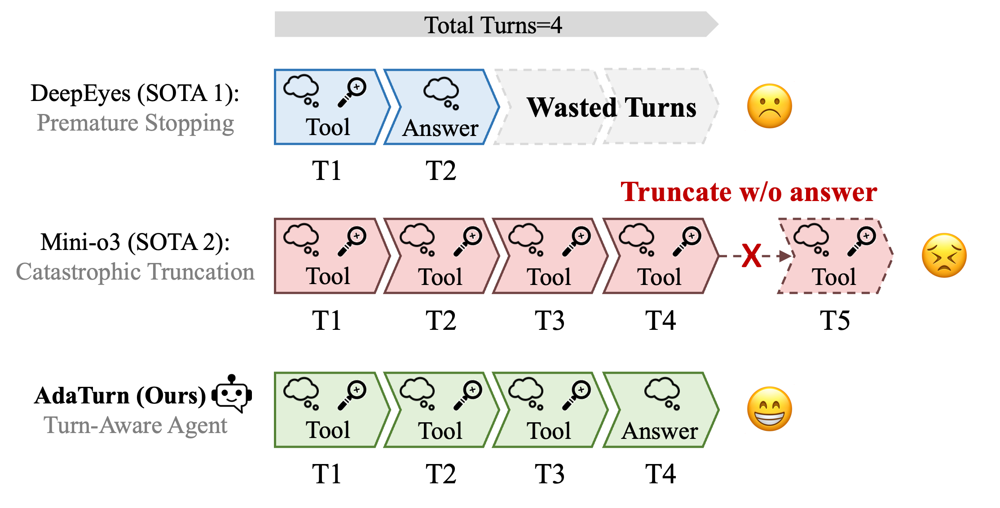
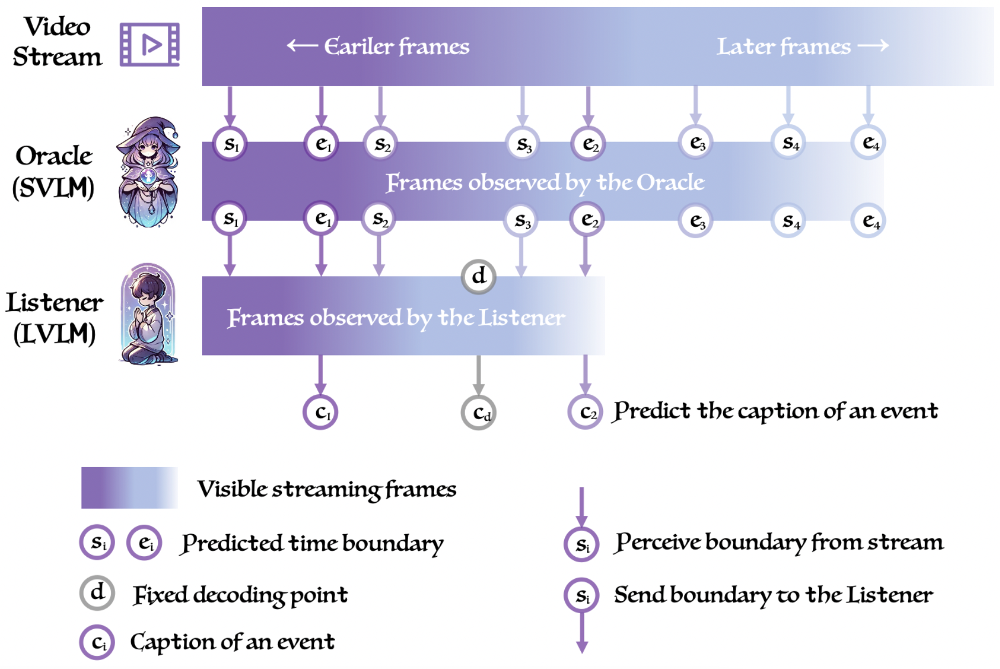

AdaTurn: Budget-Aware Test-Time Scaling for Active Visual Perception Agents
arXiv preprint, 2026
梁苏叁 · Liang, Su, San
Hi there! I am a fourth-year Ph.D. student in the Computer Science Department at the University of Rochester, advised by Prof. Chenliang Xu. Before joining Prof. Xu's lab, I received my bachelor's degree in Computer Science at the University of Chinese Academy of Sciences, where I was fortunate to research under Prof. Shiguang Shan from 2020 for a year and a half — an exciting early research experience. I also worked closely with Prof. Ming-Hsuan Yang.
My research lies in Computer Vision and Deep Learning — especially vision-language models and agents, multi-modal learning, spatial audio generation, and audio-visual synthesis.
I am actively seeking China-based full-time opportunities for 2027. Feel free to reach out if you're interested — my email and phone number are available in the CV.


arXiv preprint, 2026



The IEEE/CVF Conference on Computer Vision and Pattern Recognition, 2026

The IEEE/CVF Conference on Computer Vision and Pattern Recognition, 2026

The IEEE/CVF Conference on Computer Vision and Pattern Recognition, 2026


The Thirty-Ninth Annual Conference on Neural Information Processing Systems, Dec. 2025


The Thirteenth International Conference on Learning Representations, Apr. 2025


arXiv preprint


Conference on Computer Vision and Pattern Recognition, Jun. 2024

Conference of the European Chapter of the Association for Computational Linguistics, Mar. 2024


Conference on Neural Information Processing Systems, Dec. 2023


Ph.D. Computer Science
Sept. 2022 – Present
B.Eng. Computer Science
Sept. 2018 – Jul. 2022
Research Intern
May 2025 – Aug. 2025
Advisor: Daxiang Dong
Research Scientist Intern
May 2024 – Aug. 2024
Advisors: Dr. Dejan Markovic, Dr. Israel D. Gebru, and Dr. Alexander Richard
Research Intern
Sept. 2021 – Mar. 2022
Advisors: Prof. Ming-Hsuan Yang and Dr. Taihong Xiao
Research Intern
Jun. 2021 – Aug. 2021
Advisors: Dr. Yizhi Wang and Dr. Hao Xu
Research Assistant
Feb. 2020 – Apr. 2021
Advisors: Prof. Shiguang Shan and Dr. Shuang Yang